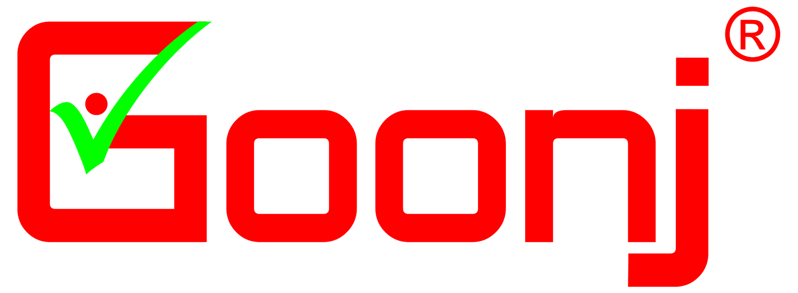

Data consulting built around your organization's mission
Every nonprofit has different data challenges. Our consultants combine deep nonprofit expertise with Dalgo's technology to design solutions that fit your workflows, your teams, and your goals.
We were able to undertake training from the Dalgo team — Pratiksha, who trained us; there were three of us, and I was one member of that training cohort. They were able to take us through different data engineering concepts, and gave us over 40 hours of training to build our capacity.
“
Schema Co-Design
Even so, when we came to Dalgo we had our own schema in mind, and Rito and the team helped us see why what we had drawn up wouldn't actually work well — both for using the tool and for summarising our data the way we needed. They helped us redesign it, and we ended up with a schema that was much more efficient for our reporting.
“
Consulting-led Setup
For us, we had a lot of help from the Dalgo team — a lot of consulting, and just being able to set up the platform for us. A lot of it was done with the support from the Dalgo team. My colleague Kiran was working closely with the Dalgo team, and figuring a lot of things out.
“
Sector Expertise
They (Dalgo) bring in a lot of sector knowledge in terms of what dashboards can look like, what is the kind of effort that we need to put in before and after that. So I think that helped us get into a very good space of getting our expectations clear.
Durga India“
Consultant Partnership
Our Dalgo SPOC, Himanshu Dube, was super patient, helpful, and approachable in understanding our requirements and challenges. He helped us envision how Dalgo could support us — not just in creating dashboards, but in showing how data works in the transform stage.
“
AI-Assisted Upskilling
One more thing Dalgo has helped us with — especially Siddhant during consultation — is teaching us how to use AI to build and manipulate these views that we then use to represent the data. That helped me a lot, because I'm not a coder.
“
Pipeline Engineering
The consultant supported us with data engineering to set up and streamline the pipeline from Salesforce to Tableau via Dalgo. This is enabling automated data flow into our dashboards, reducing manual data handling and improving the reliability and timeliness of our reporting.
“
Hands-on Capability Building
In September we had a three-day in-person bootcamp with the Dalgo team where we learned to use the tool more deeply — including coding in DBT under Rito's guidance. That gave us real confidence to handle smaller problems on our own.
“
Data Ownership
So it has really built my capacity to not just be an IT Officer, but to be a point of support for the data team and the MEL teams. When they have challenges, now they can come to us to be able to start the troubleshooting process, rather than going directly to the consultant. So we appreciate that.

“
Patient, Hands-on Setup
Pratiksha and Siddhant were very helpful during the initial setup. They were very patient with team members and explained processes properly and sometime multiple times as well.
What Dalgo Consulting does
Strategic data expertise for every stage of your data journey
From monitoring frameworks to executive dashboards to AI readiness, our consultants pair nonprofit expertise with Dalgo's technology to build data systems you can trust.
Data discovery
A structured look at where your data stands today — sources, gaps, and the quickest wins. Often the first engagement.
Advisory
Ongoing counsel for data decisions — tooling, governance, architecture, and hiring.
Capacity building
Training for M&E and program teams, so the systems we build together keep working after the engagement ends.
AI readiness
Assess where AI can help your programmes, and get your data ready for it.
Monitoring & evaluation
Log frames, indicators, and collection formats that flow straight into your dashboards and reports.
Data strategy
A realistic roadmap from where your data is now to where your mission needs it to be.
Implementation support
Hands-on help connecting sources, cleaning data, and getting pipelines live in production.
Pro bono consulting
For eligible nonprofits — a complimentary one-hour discovery session to map your data challenges and the right next steps.
Ready to strengthen your organization's data capabilities?
Whether you're improving reporting, designing a new MEL framework, integrating systems, or preparing for AI, we'll help you build a data foundation that supports better decisions and greater impact.